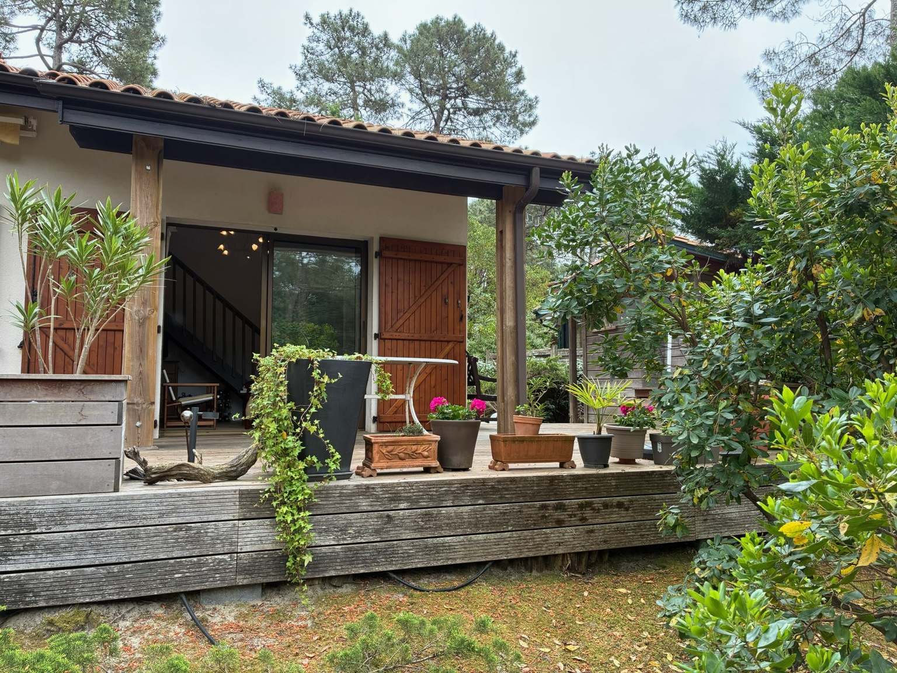
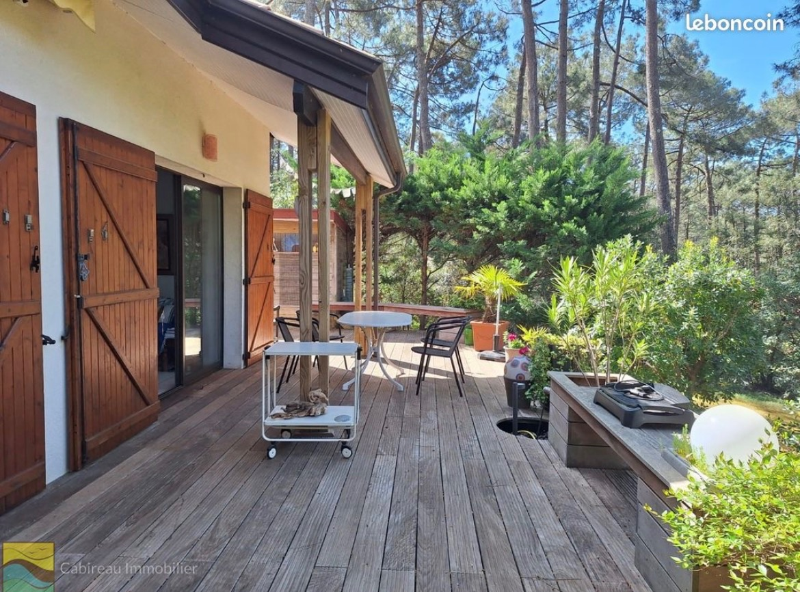
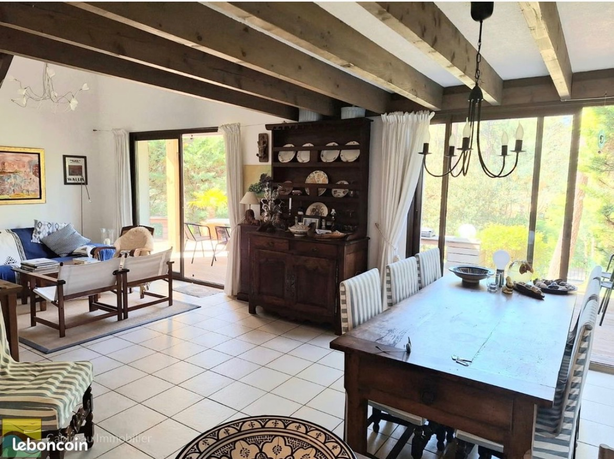
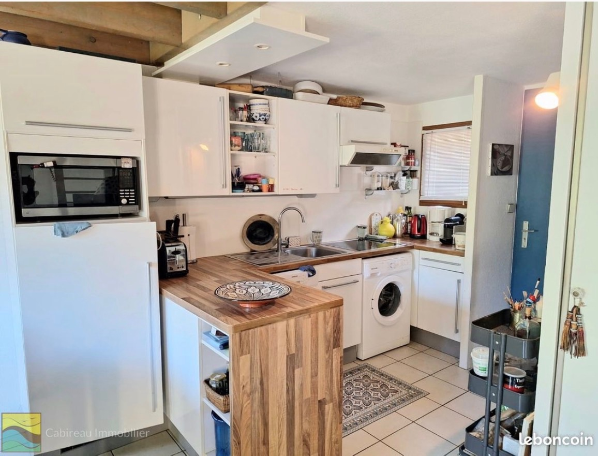
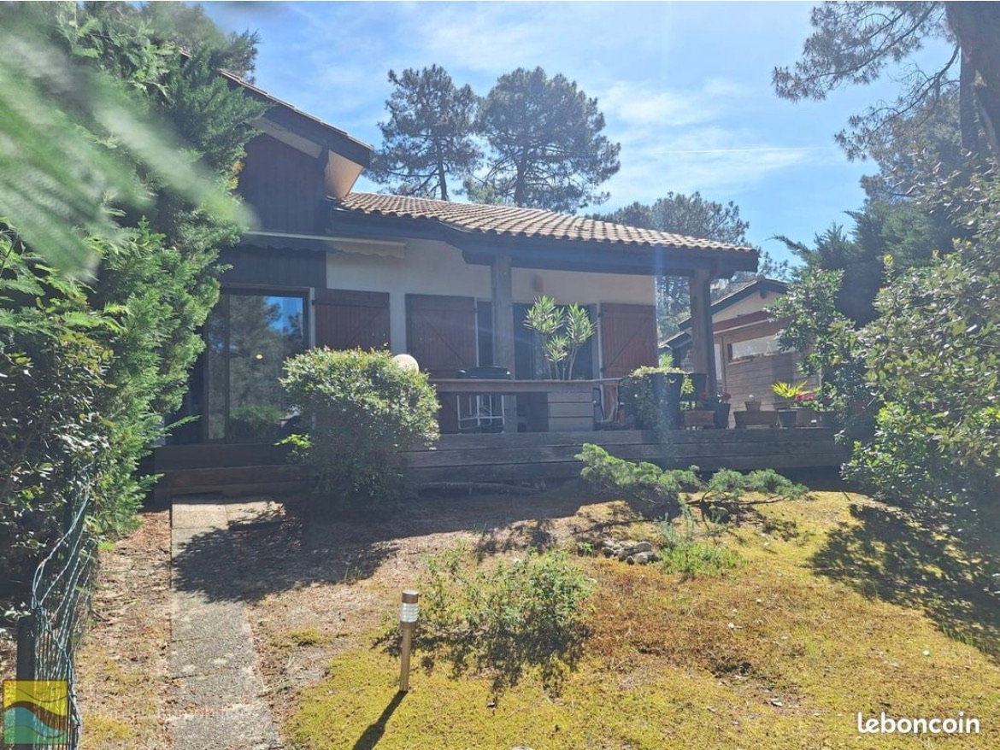

01
Vivre dehors
Une grande terrasse en bois et un jardin arboré pour déjeuner, lire et profiter de la douceur des soirées.
Une maison chaleureuse avec jardin et terrasse, nichée sous les pins pour des vacances au rythme de Lacanau.
Découvrir la maisonÀ Lacanau Océan, la maison s'ouvre largement sur une terrasse en bois et un jardin arboré. Les pins, la végétation et les espaces extérieurs créent une atmosphère paisible, idéale pour profiter des vacances en famille ou entre amis.
À l'intérieur, la pièce de vie bénéficie d'un beau volume sous les poutres et communique avec la cuisine. Trois chambres permettent d'accueillir confortablement famille et invités.
* Capacité définitive et équipements à confirmer avant l'ouverture des réservations.




Photos provisoires prises avant le réaménagement de la maison. Une nouvelle galerie sera publiée après les travaux.
Une grande terrasse en bois et un jardin arboré pour déjeuner, lire et profiter de la douceur des soirées.
Une pièce de vie ouverte et conviviale, avec de beaux volumes et des accès directs vers l'extérieur.
La piscine de la résidence complète les journées entre plage, balades à vélo et activités autour de Lacanau.

La terrasse prolonge naturellement la maison. Le jardin privatif, entouré de végétation, offre un cadre typiquement canaulais et préserve l'esprit nature du lieu.
Le mobilier extérieur et les aménagements présentés sur certaines photos seront renouvelés avant la mise en location.
Une destination où l'on alterne plage, surf, pistes cyclables, balades sous les pins, lac et golf. La maison constitue un point de départ paisible pour profiter de tout ce qui fait l'esprit de Lacanau.
Le site est en cours de préparation. Les disponibilités, tarifs et modalités de réservation seront ajoutés prochainement.
Nous contacterRemplacez VOTRE-EMAIL@EXEMPLE.FR dans index.html avant publication.